전기공사산업기사 (2016-03-06 기출문제)
1과목: 전기응용
1. 인버터(inverter)의 용도는?
- 교류를 직류로 변환
- 직류를 직류로 변환
- 교류를 직류로 변환
- 직류를 교류로 변환
(정답률: 88%)

2. 전기분해에서 패러데이의 법칙은? (단, Q[C] = 통과한 전기량, K = 물질의 전기화학당량 W[g] = 석출된 물질의 양, t = 통과시간, I 전류 E[V] = 전압이다.)
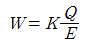
- W=KEt
- W=KQ=KIt
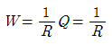
(정답률: 85%)
3. 2000[cd]의 점광원으로부터 4[m] 떨어진 점에서 광원에 수직한 평면상으로 1/50초간 빛을 비추었을 때의 노출[lxㆍs]은?
- 2.5
- 3.7
- 5.7
- 6.3
(정답률: 66%)
4. 제어요소는 무엇으로 구성 되는가?
- 검출부
- 검출부와 조절부
- 검출부와 조작부
- 조작부와 조절부
(정답률: 76%)
5. 그림과 같이 간판을 비추는 광원이 있다. 간판면상 P점의 조도를 200[lx]로 하려면 광원의 광도[cd]는?
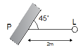
- 400
- 500
- 800√2
- 500√2
(정답률: 71%)
6. 직접조명 시 벽면을 이용할 경우 등기구와 벽면사이의 간격 S0는?
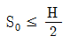
- S0≤1.5H
- S0≤2H
(정답률: 68%)
7. 간접식 저항가열에 사용되는 발열체의 필요조건이 아닌 것은?
- 내열성이 클 것
- 내식성이 클 것
- 저항률이 비교적 크고 온도계수가 작을 것
- 발열체의 최고온도가 가열온도보다 낮을 것
(정답률: 64%)
8. 적외선 전구를 사용하는 건조과정에서 건조에 유효한 파장인 1~4[μm]의 방사파를 얻기 위하여 적외선 전구의 필라멘트 온도(°K) 범위는?
- 1800 ~ 2200
- 2200 ~ 2500
- 2800 ~ 3000
- 2800 ~ 3200
(정답률: 67%)
9. 루소선도에서 전광속 F와 면적 S사이의 관계식으로 옳은 것은? (단, a와 b는 상수이다.)
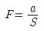
- F=aS
- F=aS+b
- F=aS2
(정답률: 68%)
10. 효율이 높고 고속 동작이 용이하며, 소형이고 고전압 대전류에 적합한 정류기로 사용되는 것은?
- 수은정류기
- 회전변류기
- 전동발전기
- 실리콘제어정류기
(정답률: 76%)
11. 열차가 곡선 궤도부를 원활하게 통과하기 위한 조치는?
- 궤간(gauge)
- 확도(slack)
- 복진지(anti-creeping)
- 종곡선(vertical curve)
(정답률: 67%)
12. 자동차 등 차량공업, 기계 및 전기 기계기구, 기타 금속제품의 도장을 건조하는데 주로 이용되는 가열방식은?
- 저항 가열
- 유도 가열
- 고주파 가열
- 적외선 가열
(정답률: 64%)
13. 제품제조 과정에서의 화학 반응식이 다음과 같은 전기로의 가열 방식은?
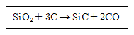
- 유전가열
- 유도가열
- 간접저항가열
- 직접저항가열
(정답률: 63%)
14. 저항 가열은 어떤 원리를 이용한 것인가?
- 줄열
- 아크손
- 유전체손
- 히스테리시스손
(정답률: 80%)
15. SCR을 두 개의 트랜지스터 등가 회로로 나타낼 때의 올바른 접속은?
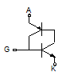
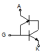
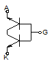
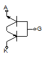
(정답률: 79%)
16. 전기집진기는 무엇을 이용한 것인가?
- 자기력
- 전자기력
- 유도기전력
- 대전체간의 정전기력
(정답률: 65%)
17. 출력 7200[W], 800[rpm]로 회전하고 있는 전동기의 토크[kgㆍm]는 약 얼마인가?
- 0.14
- 8.77
- 86
- 115
(정답률: 77%)
18. 아크용접에 주로 사용되는 가스는?
- 산소
- 헬륨
- 질소
- 오존
(정답률: 73%)
19. 전동기의 회생제동이란?
- 전동기의 기전력을 저항으로서 소비시키는 방법이다.
- 와류손으로 회전체의 에너지를 잃게 하는 방법이다.
- 전동기를 발전제동으로 하여 발생 전력을 선로에 보내는 방법이다.
- 전동기의 결선을 바꾸어서 회전방향을 반대로 하여 제동하는 방법이다.
(정답률: 73%)
20. 파장폭이 좁은 3가지의 빛을 조합하여 효율이 높은 백색 빛을 얻는 3파장 형광램프에서 3가지 빛이 아닌 것은
- 청색
- 녹색
- 황색
- 적색
(정답률: 77%)
2과목: 전력공학
21. 송전선로에서 연가를 하는 주된 목적은?
- 미관상 필요
- 직격뢰의 방지
- 선로정수의 평형
- 지지물의 높이를 낮추기 위하여
(정답률: 60%)
22. 어떤 발전소의 유효낙차가 100[m]이고, 최대사용수량이 10[m3/s]일 경우 이 발전소의 이론적인 출력은 몇 [kW]인가?
- 4900
- 9800
- 10000
- 14700
(정답률: 55%)
23. 우리나라 22.9kV 배전선로에서 가장 많이 사용하는 배전방식과 중성점 접지방식은?
- 3상 3선식 비접지
- 3상 4선식 비접지
- 3상 3선식 다중접지
- 3상 4선식 다중접지
(정답률: 55%)
24. 다음 송전선의 전압변동률 식에서 VR1은 무엇을 의미하는가?
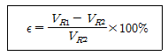
- 부하시 송전단 전압
- 무부하시 송전단 전압
- 전부하시 수전단 전압
- 무부하시 수전단 전압
(정답률: 45%)
25. 100[kVA] 단상변압기 3대를 △-△결선으로 사용 하다가 1대의 고장으로 V-V 결선으로 사용하면 약 몇 [kVA] 부하까지 사용할 수 있는가?
- 150
- 173
- 225
- 300
(정답률: 58%)
26. 우리나라 22.9kV 배전선로에 적용하는 피뢰기의 공칭방전전류[A]는?
- 1500
- 2500
- 5000
- 10000
(정답률: 46%)
27. 1선 지락 시에 전위상승이 가장 적은 접지방식은?
- 직접 접지
- 저항 접지
- 리액터 접지
- 소호리액터 접지
(정답률: 44%)
28. 전원으로부터의 합성 임피던스가 0.5[%](15000kVA 기준)인 곳에 설치하는 차단기 용량은 몇 [MVA] 이상이어야 하는가?
- 2000
- 2500
- 3000
- 3500
(정답률: 50%)
29. 직렬 콘덴서를 선로에 삽입할 때의 장점이 아닌 것은?
- 역률을 개선한다.
- 정태안정도를 증가한다.
- 선로의 인덕턴스를 보상한다.
- 수전단의 전압변동률을 줄인다.
(정답률: 43%)
30. 부하에 따라 전압 변동이 심한 급전선을 가진 배전 변전소의 전압 조정장치로서 적당한 것은?
- 단권 변압기
- 주변압기 탭
- 전력용 콘덴서
- 유도 전압조정기
(정답률: 46%)
31. 부하전류 및 단락전류를 모두 개폐할 수 있는 스위치는?
- 단로기
- 차단기
- 선로개폐기
- 전력퓨즈
(정답률: 52%)
32. 선로의 커패시턴스와 무관한 것은?
- 전자유도
- 개폐서지
- 중성점 잔류전압
- 발전기 자기여자현상
(정답률: 34%)
33. 배전선에서 균등하게 분포된 부하일 경우 배전선 말단의 전압강하는 모두 부하가 배전선의 어느 지점에 집중되어 있을 때의 전압강하와 같은가?
- 1/2
- 1/3
- 2/3
- 1/5
(정답률: 43%)
34. 화력발전소에서 석탄 1[kg]으로 발생할 수 있는 전력량은 약 몇 [kWh]인가? (단, 석탄의 발열량은 5000[kcal/kg], 발전소의 효율은 40[%]이다.)
- 2.0
- 2.3
- 4.7
- 5.8
(정답률: 33%)
35. 송전거리, 전력, 손실률 및 역률이 일정하다면 전선의 굵기는?
- 전류에 비례한다.
- 전류에 반비례한다.
- 전압의 제곱에 비례한다.
- 전압의 제곱에 반비례한다.
(정답률: 39%)
36. 총부하설비가 160[kW], 수용률이 60[%], 부하역률이 80[%]인 수용가에 공급하기 위한 변압기 용량[kVA]은?
- 40
- 80
- 120
- 160
(정답률: 49%)
37. 154[kV] 송전계통에서 3상 단락고장이 발생 하였을 경우 고장 점에서 본 등가 정상 임피던스가 100[MVA] 기준으로 25[%]라고 하면 단락용량은 몇 [MVA]인가?
- 250
- 300
- 400
- 500
(정답률: 43%)
38. 감전방지 대책으로 적합하지 않은 것은?
- 외함접지
- 아크혼 설치
- 2중 절연기기
- 누전 차단기 설치
(정답률: 51%)
39. 3상 1회선 송전선로의 소호리액터의 용량[kVA]은?
- 선로 충전용량과 같다.
- 선간 충전용량의 1/2 이다.
- 3선 일괄의 대지 충전 용량과 같다.
- 1선과 중성점 사이의 충전 용량과 같다.
(정답률: 42%)
40. 18~23개를 한 줄로 이어 단 표준현수애자를 사용하는 전압[kV]은?
- 23[kV]
- 154[kV]
- 345[kV]
- 765[kV]
(정답률: 49%)
3과목: 전기기기
41. 교류 정류자 전동기의 설명 중 틀린 것은?
- 정류작용은 직류기와 같이 간단히 해결된다.
- 구조가 일반적으로 복잡하여 고장이 생기기 쉽다.
- 기동토크가 크고 기동 장치가 필요 없는 경우가 많다.
- 역률이 높은 편이며 연속적인 속도 제어가 가능하다.
(정답률: 32%)
42. 직류 분권전동기의 계자저항을 운전 중에 증가시키면?
- 전류는 일정
- 속도는 감소
- 속도는 일정
- 속도는 증가
(정답률: 36%)
43. 역률 80[%](뒤짐)로 전부하 운전 중인 3상 100[kVA], 3000/200[V] 변압기의 저압측 선전류의 무효분은 몇 [A]인가?
- 100
- 80√3
- 100√3
- 500√3
(정답률: 37%)
44. 권선형 유도전동기에서 2차 저항을 변화시켜서 속도제어를 하는 경우 최대토크는?
- 항상 일정하다.
- 2차 저항에만 비례한다.
- 최대 토크가 생기는 점의 슬립에 비례한다.
- 최대 토크가 생기는 점의 슬립에 반비례한다.
(정답률: 44%)
45. 3상 유도 전동기로서 작용하기 위한 슬립 s의 범위는?
- s≥1
- 0<s<1
- -1≤-1s≤0
- s=0 또는 s=1
(정답률: 57%)
46. 변압기유 열화방지 방법 중 틀린 것은?
- 밀봉방식
- 흡착제방식
- 수소봉입방식
- 개방형 콘서베이터
(정답률: 43%)
47. 스텝모터(step motor)의 장점이 아닌 것은?
- 가속, 감속이 용이하며 정ㆍ역전 및 변속이 쉽다.
- 위치제어를 할 때 각도 오차가 있고 누적된다.
- 피드백 루프가 필요없이 오른 루프로 손쉽게 속도 및 위치제어를 할 수 있다.
- 디지털 신호를 직접 제어 할 수 있으므로 컴퓨터 등 다른 디지털 기기와 인터페이스가 쉽다.
(정답률: 50%)
48. 동기기의 과도 안정도를 증가시키는 방법이 아닌 것은?
- 속응 여자 방식을 채용한다.
- 동기화 리액턴스를 크게 한다.
- 동기 탈조 계전기를 사용 한다.
- 발전기의 조속기 동작을 신속히 한다.
(정답률: 49%)
49. 직류기에서 전기자 반작용이란 전기자 권선에 흐르는 전류로 인하여 생긴 자속이 무엇에 영향을 주는 현상인가?
- 감자 작용만을 하는 현상
- 편자 작용만을 하는 현상
- 계자극에 영향을 주는 현상
- 모든 부분에 영향을 주는 현상
(정답률: 45%)
50. 3상 유도전동기의 동기속도는 주파수와 어떤 관계가 있는가?
- 비례한다.
- 반비례한다.
- 자승에 비례한다.
- 자승에 반비례한다.
(정답률: 42%)
51. 3단자 사이리스터가 아닌 것은?
- SCR
- GTO
- SCS
- TRIAC
(정답률: 43%)
52. 60[Hz], 4극 유도전동기의 슬립이 4[%]인 때의 회전수[rpm]는?
- 1728
- 1738
- 1748
- 1758
(정답률: 54%)
53. 비례추이와 관계가 있는 전동기는?
- 동기 전동기
- 정류자 전동기
- 3상 농형 유도전동기
- 3상 권선형 유도전동기
(정답률: 42%)
54. 200[kVA]의 단상변압기가 있다. 철손이 1.6[kW]이고 전부하 동손이 2.5[kW]이다. 이 변압기의 역률이 0.8일 때 전부하시의 효율은 약 몇 [%]인가?
- 96.5
- 97.0
- 97.5
- 98.0
(정답률: 33%)
55. 직류직권 전동기에서 토크 T와 회전수 N과의 관계는?
- T∝N
- T∝N2
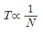
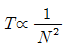
(정답률: 40%)
56. 변압기의 전부하 동손이 270[W], 철손이 120[W]일 때 최고 효율로 운전하는 출력은 정격출력의 약 몇 [%]인가?
- 66.7
- 44.4
- 33.3
- 22.5
(정답률: 44%)
57. 단상 반파정류로 직류전압 150[V]를 얻으려고 한다. 최대 역전압(Peak Inverse Voltage)이 약 몇 [V] 이상의 다이오드를 사용하여야 하는가? (단, 정류회로 및 변압기의 전압강하는 무시한다.)
- 150
- 166
- 333
- 471
(정답률: 30%)
58. 동기 전동기의 자기동법에서 계자권선을 단락하는 이유는?
- 기동이 쉽다.
- 기동권선으로 이용한다.
- 고전압의 유도를 방지한다.
- 전기자 반작용을 방지한다.
(정답률: 39%)
59. 직류발전기 중 무부하일 때보다 부하가 증가한 경우에 단자전압이 상승하는 발전기는?
- 직권발전기
- 분권발전기
- 과복권발전기
- 차동복권발전기
(정답률: 35%)
60. 3상 교류발전기의 기전력에 대하여 π/2[rad] 뒤진 전기자 전류가 흐르면 전기자 반작용은?
- 증자작용을 한다.
- 감자작용을 한다.
- 횡축 반작용을 한다.
- 교차 자화작용을 한다.
(정답률: 48%)
4과목: 회로이론
61. 아래와 같은 비정현파 전압을 RL 직렬회로에 인가할 때에 제 3고조파 전류의 실효값[A]은? (단, R=4[Ω], wL=1[Ω]이다.)
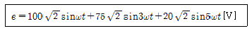
- 4
- 15
- 20
- 75
(정답률: 41%)
62. 선간전압 220[V], 역률 60[%]인 평형 3상 부하에서 소비전력 P=10[kW]일 때 선전류는 약 몇 [A]인가?
- 25.3
- 32.8
- 43.7
- 53.6
(정답률: 39%)
63.
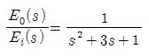
의 전달함수를 미분방정식으로 표시하면? (단,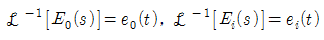
)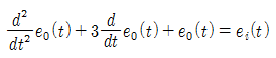
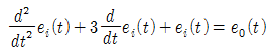
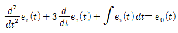
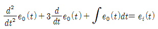
(정답률: 37%)
64.
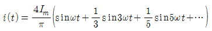
로 표시하는 파형은?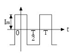
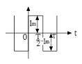
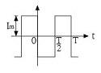
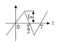
(정답률: 35%)
65. 그림과 같은 회로에서 전류 I[A]는?
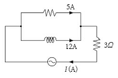
- 7
- 10
- 13
- 17
(정답률: 39%)
66.
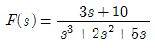
일 때 f(t)의 최종값은?- 0
- 1
- 2
- 3
(정답률: 48%)
67. RLC 직렬회로에서 제 n고조파의 공진주파수 f[Hz]는?
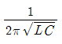
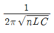
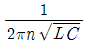
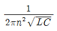
(정답률: 47%)
68.
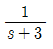
을 역라플라스 변환하면?- e3t
- e-3t
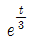
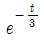
(정답률: 47%)
69. 20[kVA] 변압기 2대로 공급할 수 있는 최대 3상 전력은 약 몇 [kVA]인가?
- 17
- 25
- 35
- 40
(정답률: 48%)
70. 한 상의 임피던스 Z=6+j8[Ω]인 평형 Y부하에 평형 3상 전압 200[V]를 인가할 때 무효전력은 약 몇 Var인가?
- 1330
- 1848
- 2381
- 3200
(정답률: 43%)
71. T형 4단자 회로의 임피던스 파라미터중 Z22는?
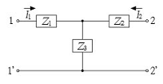
- Z1+Z2
- Z2+Z3
- Z1+Z3
- -Z2
(정답률: 44%)
72. 정전용량 C만의 회로에서 100[V], 60[Hz]의 교류를 가했을 때, 60[mA]의 전류가 흐른다면 C는 약 몇 [㎌]인가?
- 5.26
- 4.32
- 3.59
- 1.59
(정답률: 31%)
73. △결선된 부하를 Y결선으로 바꾸면 소비전력은 어떻게 되겠는가? (단, 선간전압은 일정하다.)
- 1/3로 된다.
- 3배로 된다.
- 1/9로 된다.
- 9배로 된다.
(정답률: 49%)
74. RLC 회로망에서 입력을 ei(t), 출력을 i(t)로 할 때, 이 회로의 전달함수는?
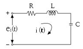
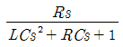
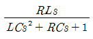
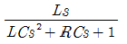
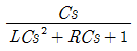
(정답률: 40%)
75. 그림과 같은 회로를 t=0에서 스위치 S를 닫았을 때 R[Ω]에 흐르는 전류 iR(t)[A]는?
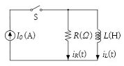
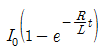
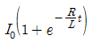
- I0
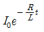
(정답률: 28%)
76.
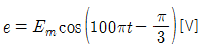
와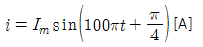
의 위상차를 시간으로 나타내면 약 몇 초 인가?- 3.33×10-4
- 4.33×10-4
- 6.33×10-4
- 8.33×10-4
(정답률: 32%)
77. 회로의 3[Ω] 저항 양단에 걸리는 전압[V]은?
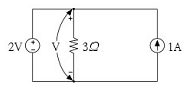
- 2
- - 2
- 3
- - 3
(정답률: 40%)
78. 대칭 3상 전압이 a상 Va[V], b상 Vb=a2Va[V], c상 Vc=aVa[V]일 때 a상 기준으로 한 대칭분 전압 중 정상분 V1[V]은 어떻게 표시되는 가? (단,
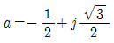
이다.)- 0
- Va
- aVa
- a2Va
(정답률: 38%)
79. 314[mH]의 자기 인덕턴스에 120[V], 60[Hz]의 교류전압을 가하였을 때 흐르는 전류[A]는?
- 10
- 8
- 1
- 0.5
(정답률: 38%)
80. 그림과 같은 회로의 구동점 임피던스[Ω] 는?
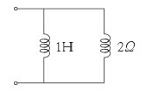
- 2+jw
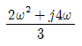
(정답률: 36%)
5과목: 전기설비
81. 지중전선로의 전선으로 적합한 것은?
- 케이블
- 동복강선
- 절연전선
- 나경동선
(정답률: 54%)
82. 저압 옥내배선에 사용되는 연동선의 굵기는 일반적인 경우 몇 [mm2] 이상이어야 하는가?
- 2
- 2.5
- 4
- 6
(정답률: 43%)
83. 과전류차단기를 설치하지 않아야 할 곳은?
- 수용가의 인입선 부분
- 고압 배전선로의 인출장소
- 직접 접지계통에 설치한 변압기의 접지선
- 역률조정용 고압 병렬콘덴서 뱅크의 분기선
(정답률: 49%)
84. 금속관 공사에 대한 기준으로 틀린 것은?
- 저압 옥내배선에 사용하는 전선으로 옥외용 비닐절연전선을 사용하였다.
- 저압 옥내배선의 금속관 안에는 전선에 접속점이 없도록 하였다.
- 콘크리트에 매설하는 금속관의 두께는 1.2[㎜]를 사용하였다.
- 저압 옥내배선의 사용전압이 400[V] 이상인 관에는 특별 제3종 접지공사를 하였다.
(정답률: 45%)
85. 버스덕트 공사에 대한 설명으로 옳은 것은?
- 버스덕트 끝부분을 개방 할 것
- 덕트는 수직으로 붙이는 경우 지지점간 거리는 12[m] 이하로 할 것
- 덕트를 조영재에 붙이는 경우 덕트의 지지점간 거리는 6[m] 이하로 할 것
- 저압 옥내배선의 사용전압이 400[V] 미만인 경우에는 덕트에 제3종 접지공사를 할 것
(정답률: 47%)
86. 154[kV]용 변성기를 사람이 접촉할 우려가 없도록 시설하는 경우에 충전부분의 지표상의 높이는 최소 몇 [m] 이상이어야 하는가?
- 4
- 5
- 6
- 8
(정답률: 37%)
87. 옥내배선에서 나전선을 사용할 수 없는 것은?
- 전선의 피복 절연물이 부식하는 장소의 전선
- 취급자 이외의 자가 출입할 수 없도록 설비한 장소의 전선
- 전용의 개폐기 및 과전류 차단기가 시설된 전기기계기구의 저압전선
- 애자 사용공사에 의하여 전개된 장소에 시설하는 경우로 전기로용 전선
(정답률: 28%)
88. 시가지 등에서 특고압 가공전선로의 시설에 대한 내용 중 틀린 것은?
- A종 철주를 지지물로 사용하는 경우의 경간은 75[m] 이하이다.
- 사용전압이 170[kV]이하인 전선로를 지지하는 애자장치는 2련 이상의 현수애자 또는 장간애자를 사용한다.
- 사용전압이 100[kV]를 초과하는 특고압 가공전선에 지락 또는 단락이 생겼을 때에는 1초 이내에 자동적으로 이를 전로로부터 차단하는 장치를 시설한다.
- 사용전압이 170[kV] 이하인 전선로를 지지하는 애자장치는 50[%] 충격섬락전압 값이 그 전선의 근접한 다른 부분을 지지하는 애자장치 값의 100[%] 이상인 것을 사용한다.
(정답률: 39%)
89. 전력보안 통신설비인 무선용 안테나 등을 지지하는 철주의 기초의 안전율이 얼마 이상이어야 하는가?
- 1.3
- 1.5
- 1.8
- 2.0
(정답률: 47%)
90. 특고압 계기용변성기의 2차측 전로의 접지공사는?(관련 규정 개정전 문제로 여기서는 기존 정답인 1번을 누르면 정답 처리됩니다. 자세한 내용은 해설을 참고하세요.)
- 제1종 접지공사
- 제2종 접지공사
- 제3종 접지공사
- 특별 제3종 접지공사
(정답률: 29%)
91. 345[kV] 가공전선로를 제1종 특고압 보안공사에 의하여 시설할 때 사용되는 경동연선의 굵기는 몇 [mm2] 이상이어야 하는가?
- 100
- 125
- 150
- 200
(정답률: 28%)
92. 차단기에 사용하는 압축공기장치에 대한 설명 중 틀린 것은?
- 공기압축기를 통하는 관은 용접에 의한 잔류응력이 생기지 않도록 할 것
- 주 공기탱크에는 사용압력 1.5배 이상 3배 이하의 최고 눈금이 있는 압력계를 시설 할 것
- 공기압축기는 최고사용압력의 1.5배 수압을 연속하여 10분간 가하여 시험하였을 때 이에 견디고 새지 아니할 것
- 공기탱크는 사용압력에서 공기의 보급이 없는 상태로 차단기의 투입 및 차단을 연속하여 3회 이상 할 수 있는 용량을 가질 것
(정답률: 42%)
93. 평상시 개폐를 하지 않는 고압 진상용 콘덴서에 고압 컷아웃스위치(COS)를 설치하는 경우 옳을 것은?
- COS에 단면적 6[mm2] 이상의 나동선을 직결한다.
- COS에 단면적 10[mm2] 이상의 나동선을 직결한다.
- COS에 단면적 16[mm2] 이상의 나동선을 직결한다.
- COS에 단면적 25[mm2] 이상의 나동선을 직결한다.
(정답률: 30%)
94. 사용전압이 22900[V]인 가공전선이 건조물과 제2차 접근상태로 시설되는 경우에 이 특고압 가공전선로의 보안공사는 어떤 종류의 보안공사로 하여야 하는가?
- 고압 보안공사
- 제1종 특고압 보안공사
- 제2종 특고압 보안공사
- 제3종 특고압 보안공사
(정답률: 44%)
95. 비접지식 고압전로에 접속되는 변압기의 외함에 실시하는 제1종 접지공사의 접지극으로 사용할 수 있는 건물 철골의 대지 전기저항은 몇 [Ω] 이하인가?
- 2
- 3
- 5
- 10
(정답률: 27%)
96. 저압 수상전선로에 사용되는 전선은?
- MI 케이블
- 알루미늄피 케이블
- 클로로프렌시스 케이블
- 클로로프렌 캡타이어 케이블
(정답률: 39%)
97. 22.9[kV] 특고압으로 가공전선과 조영물이 아닌 다른 시설물이 교차하는 경우, 상호간의 이격거리는 몇 [㎝]까지 감할 수 있는가? (단, 전선은 케이블이다.)
- 50
- 60
- 100
- 120
(정답률: 23%)
98. 가공전선로의 지지물에 시설하는 지선의 안전율과 허용인장하중의 최저값은?
- 안전율은 2.0이상, 허용인장하중 최저값은 4[kN]
- 안전율은 2.5이상, 허용인장하중 최저값은 4[kN]
- 안전율은 2.0이상, 허용인장하중 최저값은 4.4[kN]
- 안전율은 2.5이상, 허용인장하중 최저값은 4.31[kN]
(정답률: 51%)
99. 사용전압이 380[V]인 저압전로의 전선 상호간의 절연저항은 몇 [㏁] 이상이어야 하는가?
- 0.2
- 0.3
- 0.4
- 0.5
(정답률: 47%)
100. 단락전류에 의하여 생기는 기계적 충격에 견디는 것을 요구하지 않는 것은?
- 애자
- 변압기
- 조상기
- 접지선
(정답률: 38%)